install.packages("sf") # for most spatial tasks
install.packages("terra") # for raster data
install.packages("rnaturalearth") # for MS outline
install.packages("rasterVis") # for various raster plotting functions
install.packages("latticeExtra") # to add an sf layer to a levelplot
install.packages("tmap") # for tmap functions
install.packages("RColorBrewer") # for color palette
install.packages("here") # for file paths
install.packages("dplyr") # for filtering
install.packages("devtools")
devtools::install_github("ropensci/rnaturalearthhires")I have been on a quest to make maps of long-term precipitation averages in the Mississippi Sound Estuary Program’s watershed. I’ve done some mapping using R, but the maps have always been … points. The last month or so is the first time I’ve actually worked with raster data - and known what ‘raster’ meant, and how spatial data like this is stored. I had an easy-ish time making a map of annual precipitation total, because there’s only one layer in the data. The complications arose when I wanted to make a faceted map, with a panel for each month.
I know how to do this sort of thing in ggplot; in fact facets are one of the main things that led me to learn that package. But I didn’t want to turn what seemed to be a large chunk of data into a large chunk of data frames just to use what I’m familiar with. There are packages for raster data; I decided to play with them.
Below, I’ll go through some of the main functions I used - plot(), image(), levelplot(), and tmap(). The first two are super easy and work great with a single layer at a time. The latter two make faceting easier. Before I dig in though, some resources.
Resources
I’m pretty new to geospatial data. I leaned on other people’s materials a lot here. These are the ones I’ll be turning to frequently in the future:
- Geocomputation with R, by Robin Lovelace, Jakub Nowosad, and Jannes Muenchow.
- Making Maps with R, by Nico Hahn. Link goes to the
tmapchapter.
Data
Precipitation
I downloaded precipitation normals from the National Weather Service, as provided by the National Centers for Environmental Information. The data file is almost 275 MB so is not here in GitHub, but if you’d like to play with the same data you can get it from the Climate Normals product page. Select ‘Gridded Normals’, scroll down past a couple of maps to a table with a bunch of links, and, in the ‘1991-2020 Monthly Normals’ column, select ‘Precipitation’.
Or copy my version out of google drive. That link goes to a folder that has the data file as well as a pdf of metadata. The data file is prcp-1991_2020-monthly-normals-v1.0.nc.
Watershed boundary
We will probably find a better way to share the shapefile of the MSEP boundary, but for now if you want to use it, it is in this google drive folder.
Packages
If you need to install any or all of these, run the following code.
And get them loaded. I almost never load here as a library but rather call it inline when I need it. Because I’m not using latticeExtra much either I leave it out of my library calls.
library(sf)
library(terra)
library(rnaturalearth)
library(rasterVis)
library(tmap)
library(RColorBrewer)Exploring the data
Loading and subsetting
Turns out there are several ways to load and work with .nc data files. I found terra::rast() kept things simplest down the line.
dat_nc <- rast(here::here("data",
"2025-04-15 precip",
"prcp-1991_2020-monthly-normals-v1.0.nc"))Printing dat_nc gives us some idea of what’s in here. Notably, there are 85 layers - you can see this in the 2nd row of output, dimensions.
dat_ncclass : SpatRaster
dimensions : 596, 1385, 85 (nrow, ncol, nlyr)
resolution : 0.04166666, 0.04166667 (x, y)
extent : -124.7083, -67, 24.5417, 49.37503 (xmin, xmax, ymin, ymax)
coord. ref. : lon/lat WGS 84 (CRS84) (OGC:CRS84)
sources : prcp-1991_2020-monthly-normals-v1.0.nc:mlyprcp_norm (12 layers)
prcp-1991_2020-monthly-normals-v1.0.nc:mlyprcp_std (12 layers)
prcp-1991_2020-monthly-normals-v1.0.nc:mlyprcp_min (12 layers)
... and 12 more sources
varnames : mlyprcp_norm (Monthly precipitation normals from monthly precipitation values)
mlyprcp_std (Standard deviation of monthly precipitation values of all input years for a given month)
mlyprcp_min (Minimum precipitation of monthly precipitation values of all input years for a given month)
...
names : mlypr~orm_1, mlypr~orm_2, mlypr~orm_3, mlypr~orm_4, mlypr~orm_5, mlypr~orm_6, ...
unit : millimeter, millimeter, millimeter, millimeter, millimeter, millimeter, ... I’ve set the below chunk not to evaluate, but taking a look through the names shows me that not only are there monthly normals, but also standard deviations, mins, and maxes. Additionally, we get normals, sd, min, and max for 4 different seasons, AND annual values. There are also various layers with flag in them, which I assume refers to data quality.
names(dat_nc)From all of this, I can make smaller datasets for only the normal (long-term average) values. I’m also assigning month abbreviations as the layer names, for nicer facet titles.
dat_annual <- dat_nc[["annprcp_norm"]]
dat_monthly <- dat_nc[[grep("mlyprcp_norm", names(dat_nc))]]
names(dat_monthly) <- month.abbplot and image
As I was working through various tutorials and options, plot() and image() kept coming up as the quickest, easiest ways to look at data. It turns out image() only shows one layer at a time, but it is great for single layers.
Annual normals
Here is the annual data, mapped both ways. In case there was any question, we can see we are working with data from the entire country. image() uses different colors and seems like it may do more binning. It also does not have a legend by default, though one can be added.
plot(dat_annual, main = "plot()")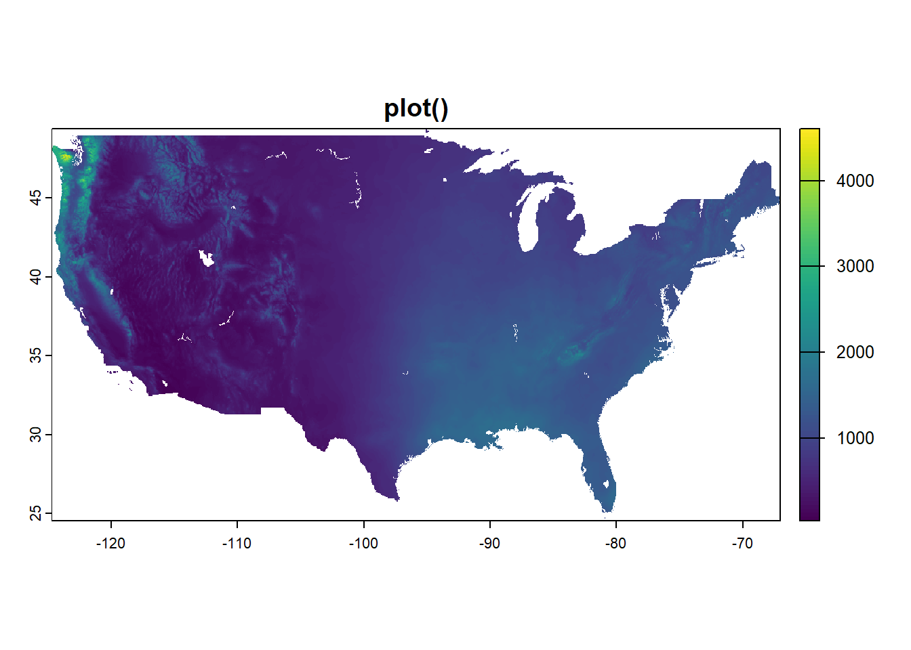
image(dat_annual, main = "image()")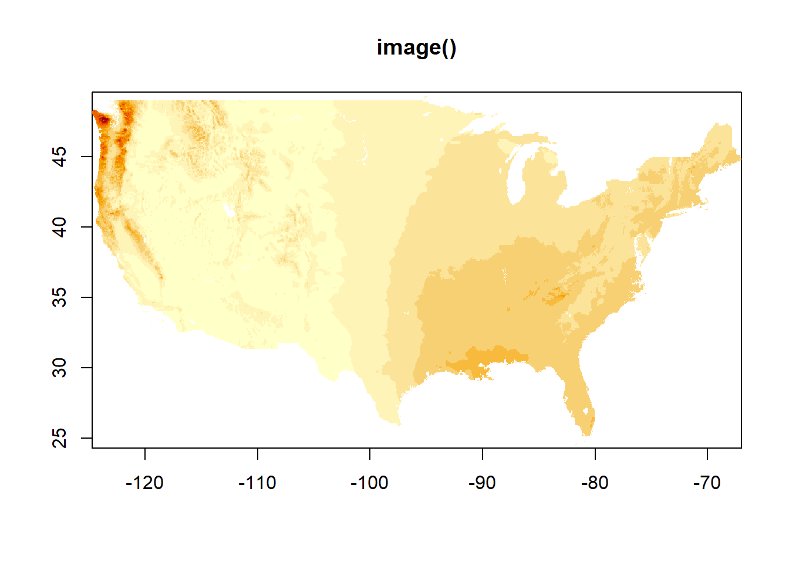
Monthly normals
plot() is a quick easy way to see multiple layers. Note though - color scales are different in the different facets! You have to work with it if you want the same color scale across facets. (We’ll get there in this post.)
image() only shows one layer at a time. I assume this is the first, and you can of course specify.
plot(dat_monthly)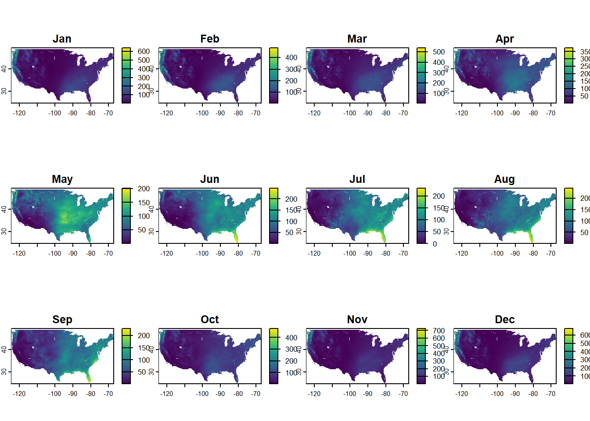
image(dat_monthly)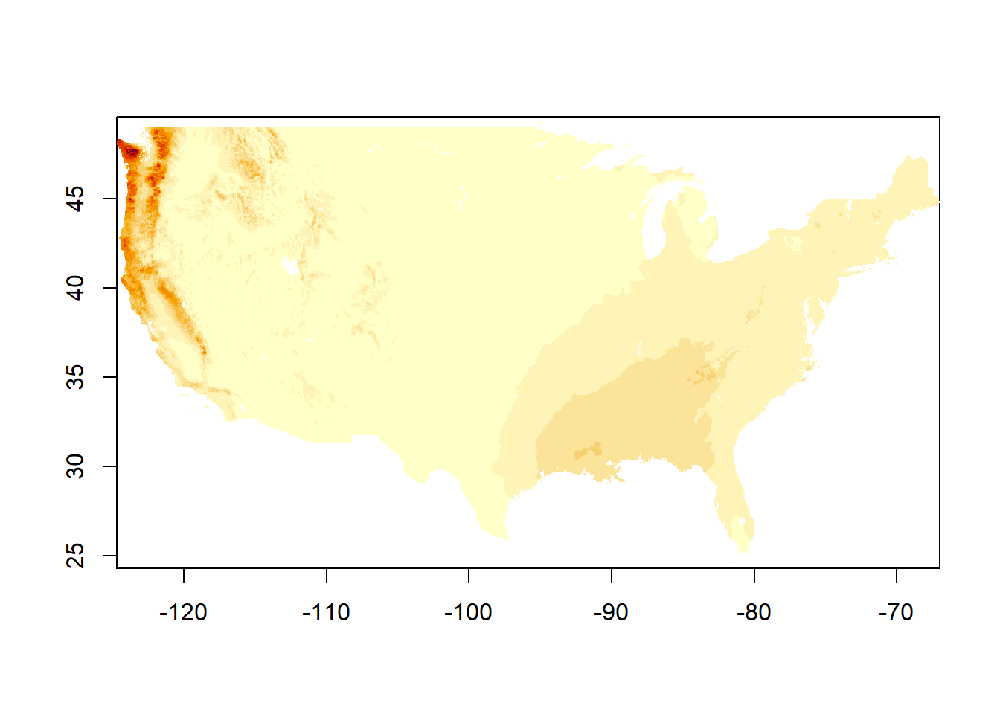
image(dat_monthly[[4]], main = "image(), layer 4")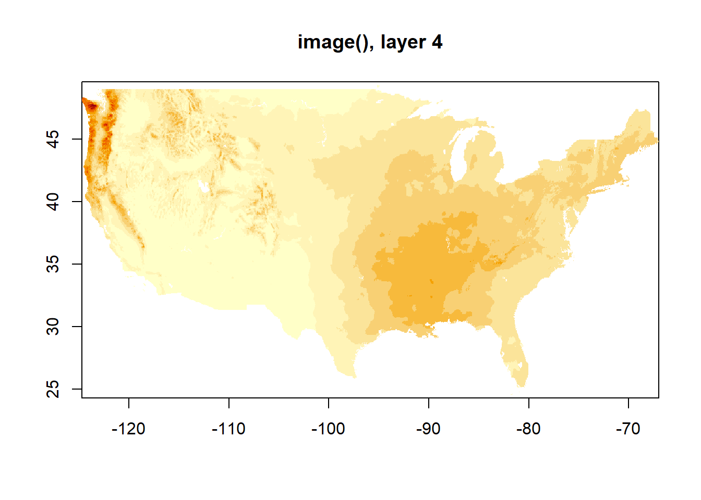
Subset and convert
I’m most interested in precipitation in the state of Mississippi, so had to learn how to crop (and mask!) raster images. I didn’t know it took two steps but it seems to. I’m also converting from millimeters to inches for an easier sense of scale.
convert to inches
annual_in <- dat_annual / 25.4
monthly_in <- dat_monthly / 25.4get the MS boundary
In my explorations, I also came across multiple ways to get state boundaries. USAboundaries is a useful package but didn’t play nice with all my mapping attempts - certain packages need certain explicitly spatial data types and I didn’t know how to convert what I got from USAboundaries. I’m sure it can be done. But I had also used rnaturalearth so I went back to that.
ms_rne <- ne_states(country = "United States of America", returnclass = "sf") |>
dplyr::filter(name == "Mississippi")The spatial extent and coordinate reference system can be investigated. I don’t show the output here, only the functions.
ext(ms_rne)
crs(ms_rne)Also make sure it generally looks right:
plot(st_geometry(ms_rne))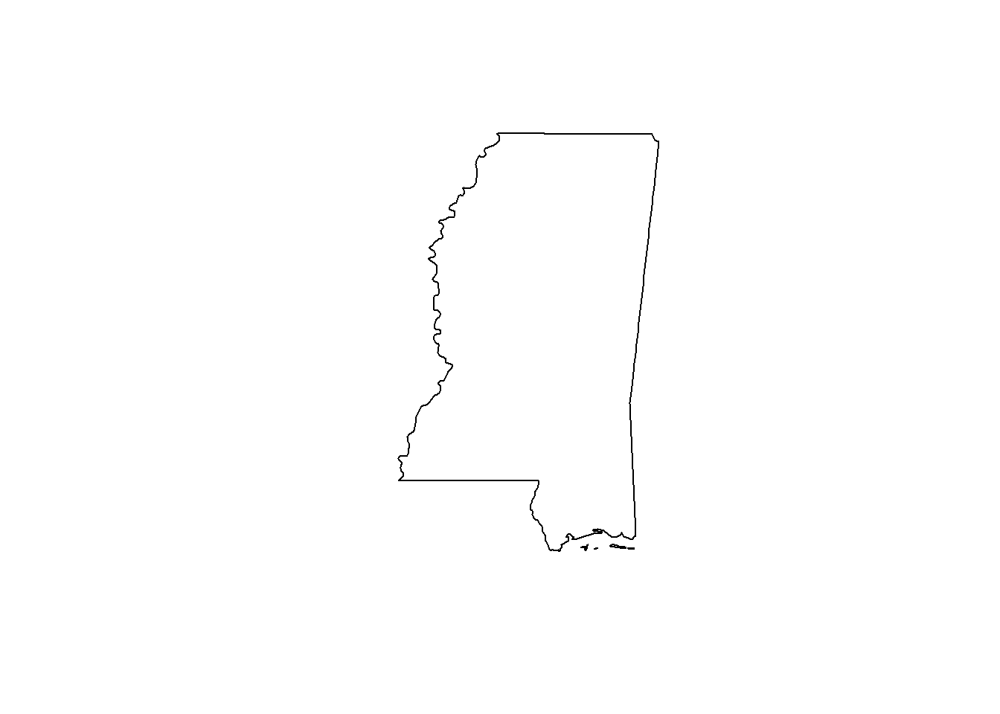
Yep, that looks like Mississippi!
I know from all my other playing that both ms_rne and my raster files are referenced to WGS-84, but just in case, I’ll go ahead and transform.
ms_rne <- sf::st_transform(ms_rne, crs(dat_annual))crop and mask
Getting the raster data into the shape of MS takes two steps. crop() makes a rectangle based on the bounding box of what you’re trying to crop to, and mask() gets it into the right shape. You could also do it in the reverse order - if you use mask() first, you see colors in the shape of the state but the entire plot region still covers the entire US.
Here, I’ll show you, because I needed to see it:
plot(mask(annual_in, ms_rne), main = "mask() only")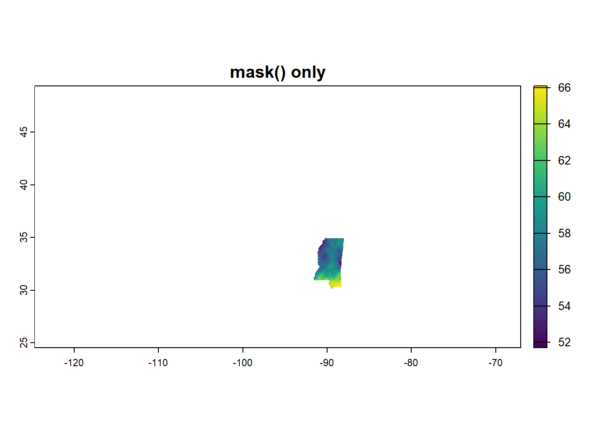
plot(crop(annual_in, ms_rne), main = "crop() only")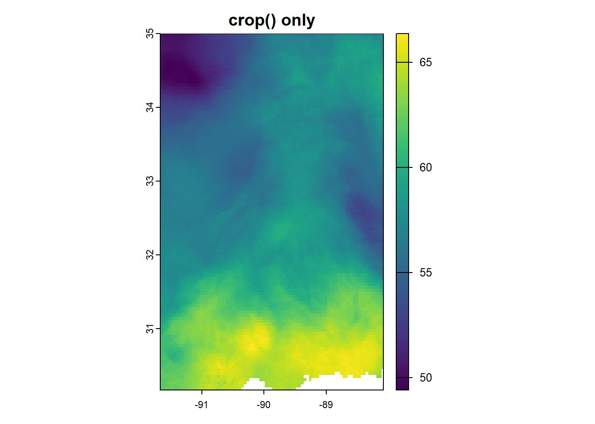
So we’ll do both! First with the annual data.
annual_ms_in <- crop(annual_in, ms_rne)
annual_ms_in <- mask(annual_ms_in, ms_rne)
plot(annual_ms_in)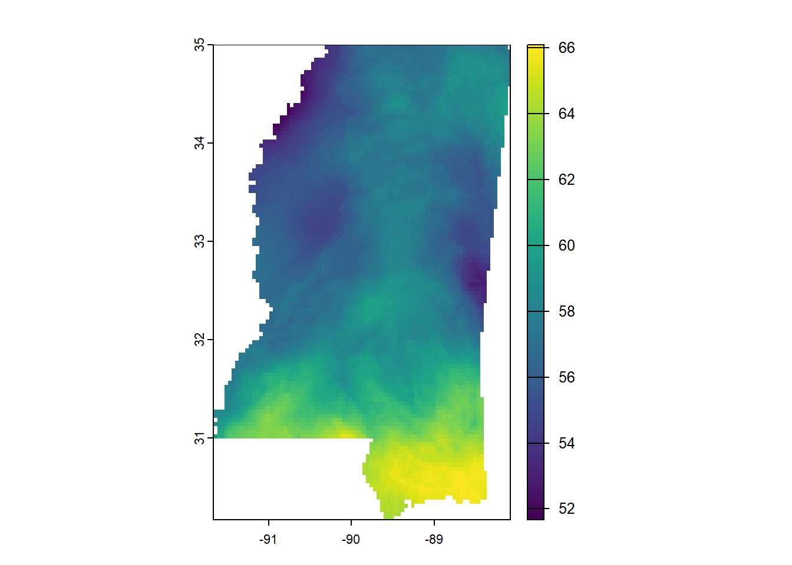
And now with monthly:
monthly_ms_in <- crop(monthly_in, ms_rne)
monthly_ms_in <- mask(monthly_ms_in, ms_rne)
plot(monthly_ms_in)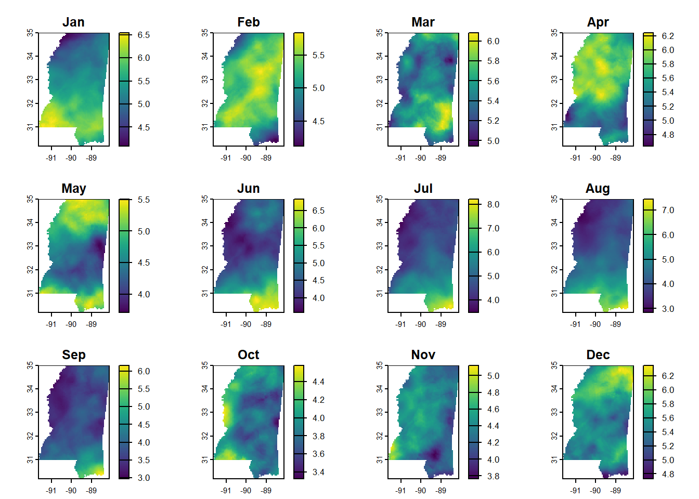
Also pull in MSEP boundary
We don’t want to crop the raster data to the MSEP boundary, but will want to overlay the boundary on the other maps. So I’ll read it in and make sure the CRS matches the other spatial files.
msep <- read_sf(here::here("data",
"2025-04-15 precip",
"MSEP_outline.shp"))
msep <- st_transform(msep, crs(annual_ms_in))
# for latticeExtra::layer and sp.polygons
msep_sp <- as_Spatial(st_geometry(msep))Now the data’s in good shape, and it’s just about making it look nice.
Maps!
Honestly, I messed around a LOT before I got nice-looking maps. At one point, I was following a tutorial that had me turn the raster data into a matrix, and I didn’t know how to associate lat and long properly, so I made an upside-down map of the US. The color palette was awesome though!
So what I’ll do here is show the output using all the defaults of different functions, and then I’ll just jump to the ones I got looking the nicest.
Annual normals
Okay, all defaults except that in levelplot() I’m setting marginal distributional plots to FALSE because they just take up too much space and aren’t meaningful here.
And levelplot() doesn’t seem to want to be in a row with the others, so it gets its own panel completely.
# put three plots in a row
par(mfrow = c(1, 2))
# make the maps
plot(annual_ms_in, main = "plot()")
image(annual_ms_in, main = "image()")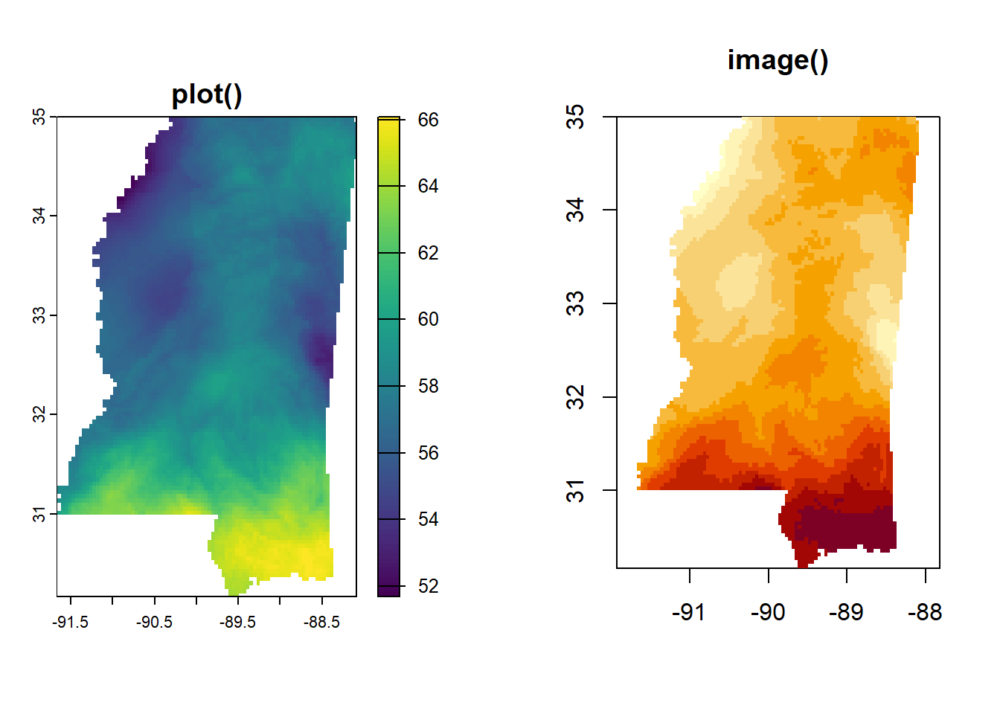
# go back to normal
par(mfrow = c(1, 1))
# make the levelplot
levelplot(annual_ms_in, margin = FALSE, main = "levelplot()")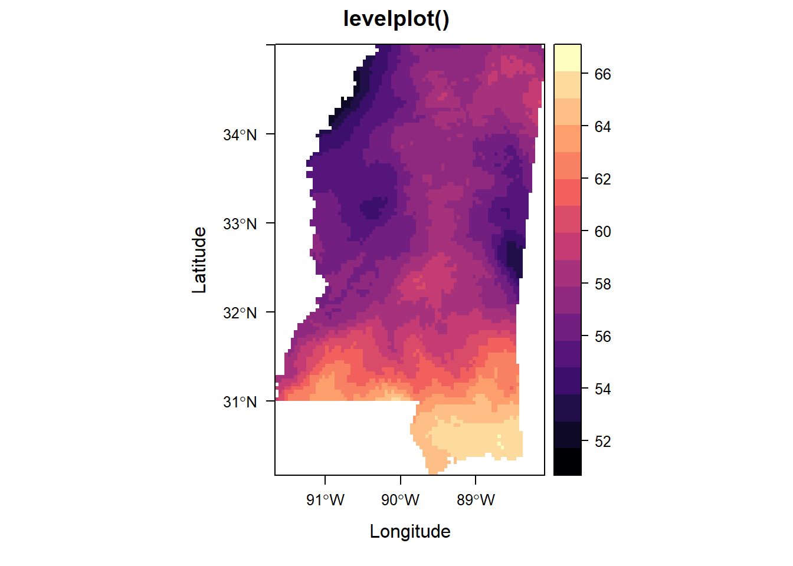
With a uniform color palette and MSEP boundary
When I actually looked through the help file for levelplot() (imagine that!), I found some examples of making your own theme. That simplified my code a TON. This will get re-used in the monthly plots.
n_colors <- 9
myPal <- RColorBrewer::brewer.pal('GnBu', n=n_colors)
myTheme <- rasterTheme(region = myPal)plot()
This makes a nice map, but I got tripped up on spacing and legends. I couldn’t manage to make a good legend for the MSEP boundary or figure out how to make a title for the default legend. Sounds silly, but when it ends up being easier with other packages, you just do it.
plot(annual_ms_in,
col = myPal,
main = "Average Annual Precipitation (in), 1991–2020")
plot(st_geometry(msep), add = TRUE, col = NA, border = "gray20", lwd = 2)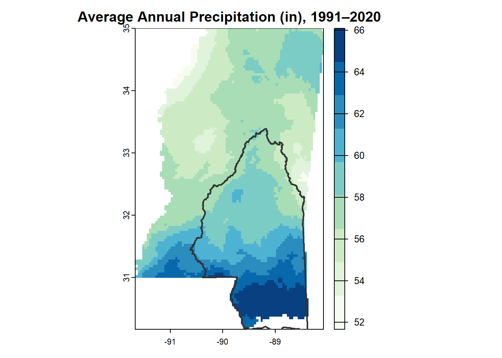
image()
This is probably my favorite of the annual precipitation maps.
image(annual_ms_in,
col = myPal,
main = "Average Annual Precipitation\n1991-2020",
axes = FALSE,
xlim = c(-91.5, -86.5))
# give it an outline
box()
# add MSEP boundary
plot(st_geometry(msep), add = TRUE, col = NA, border = "gray20", lwd = 2)
# Add legends
# first define the range of values
val_range <- range(values(annual_ms_in), na.rm = TRUE)
legend("topright",
legend = round(seq(val_range[1], val_range[2], length.out = n_colors)),
fill = myPal[seq(1, n_colors, length.out = n_colors)],
title = "Inches")
legend("bottomright",
legend = "MSEP \nBoundary",
col = "gray20",
lwd = 2,
bty = "n",
cex = 0.8)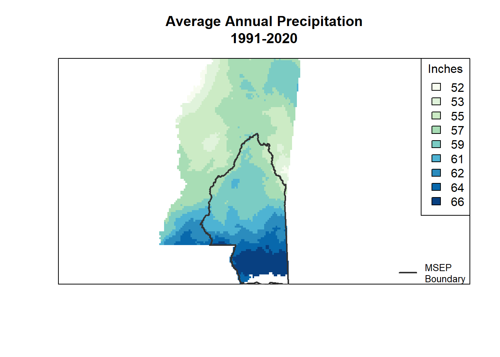
levelplot()
I couldn’t figure out the MSEP boundary legend thing with this either, though I did manage to make a legend title and give it smaller text than the default.
This is where latticeExtra pops up - it’s needed to add the polygon layer.
levelplot(annual_ms_in,
par.settings = myTheme,
main = "Average Annual Precipitation\n1991–2020",
colorkey = list(title = list("inches",
fontsize = 9),
space = "right"),
margin = FALSE,
xlab = NULL,
ylab = NULL,
scales = list(
x = list(draw = FALSE),
y = list(draw = FALSE)
)
) +
latticeExtra::layer(sp::sp.polygons(msep_sp))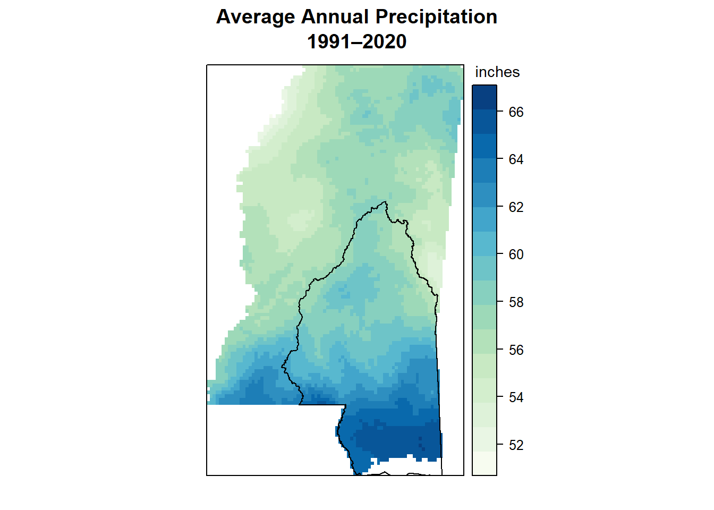
Monthly Normals
I didn’t mess around too much before landing on a couple options that worked, so I’ll jump straight to those here.
plot()
I gave up on this function pretty quickly because an AI tool told me the zlim line should make the color scale the same in all facets, and it did NOT. I gave up before trying to add the MSEP boundary.
global_min <- min(values(monthly_ms_in), na.rm = TRUE)
global_max <- max(values(monthly_ms_in), na.rm = TRUE)
plot(monthly_ms_in,
col = myPal,
zlim = c(global_min, global_max))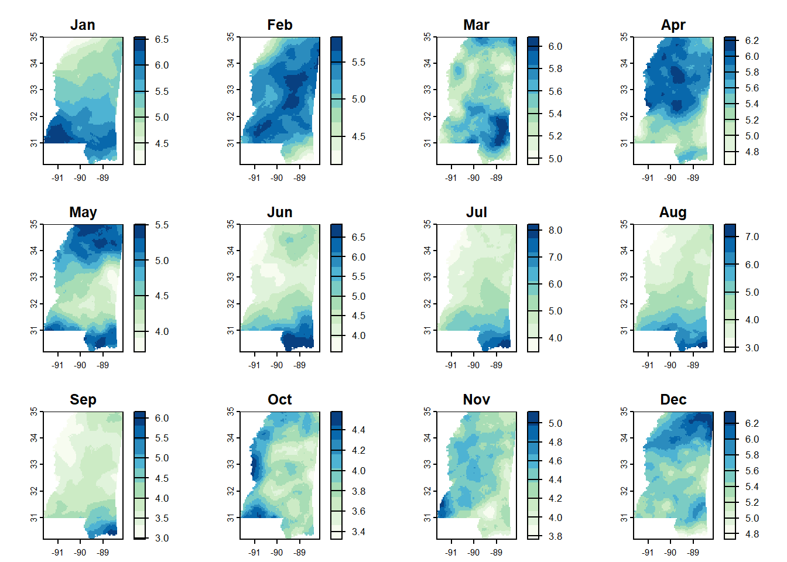
levelplot()
This worked pretty well in the end. I almost think the colors are too continuous though - it’s almost easier to see the changes when you only have a few bins and it’s all coarser. I couldn’t quite figure it out with this one, but it is pretty nice otherwise.
levelplot(monthly_ms_in,
par.settings = myTheme,
layout = c(4, 3), # 4 columns x 3 rows
main = "Average Precipitation by Month\n1991–2020",
colorkey = list(title = list("inches",
fontsize = 8),
space = "bottom"),
margin = FALSE,
xlab = NULL,
ylab = NULL,
scales = list(
x = list(draw = FALSE),
y = list(draw = FALSE)
)
) +
latticeExtra::layer(sp::sp.polygons(msep_sp))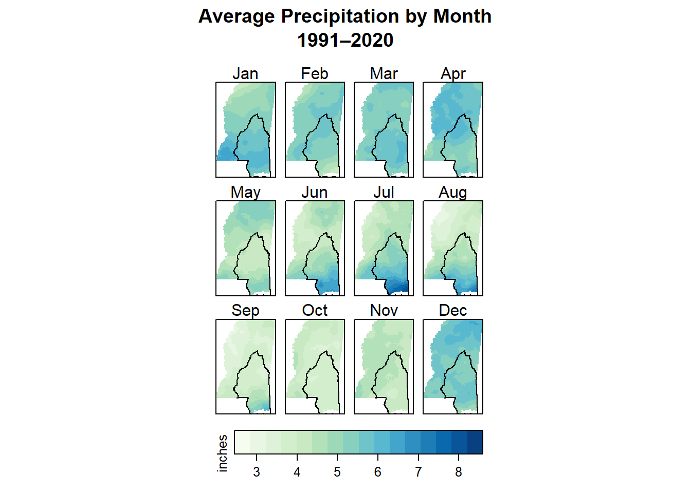
tmap
The tmap package lets you make both static and interactive maps (fun!). Here we set the mode to plot to be static, and then add layers in a similar way to how ggplot2 works. It was really quite simple to get here using tmap - I had a much easier time than I did with levelplot() and this will probably be my go-to in the future.
As with levelplot(), I would prefer a coarser binning of values, but that’s probably doable with more time. And as with most of the others, I haven’t figured out how to add a legend saying that the line in the middle of the state is the MSEP boundary. Again, I’m sure it’s possible and I just need to put more time in.
I’d still like to tinker on smaller things too - for example, making the facet labels have a white background. I suspect that’s pretty easy, but I’m sort of at the end of my brainpower here, so this is good enough for now.
tmap_mode("plot")
# start with the raster data and layer
tm_shape(monthly_ms_in) +
tm_raster(col.scale = tm_scale_continuous(values = "brewer.gn_bu"),
col.free = FALSE, # make the colors the same in every facet
col.legend = tm_legend(title = "Inches",
position = tm_pos_out("right"))) +
# add the MSEP boundary
tm_shape(msep) +
tm_borders(col = "black", lwd = 2) +
# change the layout
tm_facets(ncol = 4, nrow = 3) +
tm_title("Average Precipitation by Month\n1991–2020")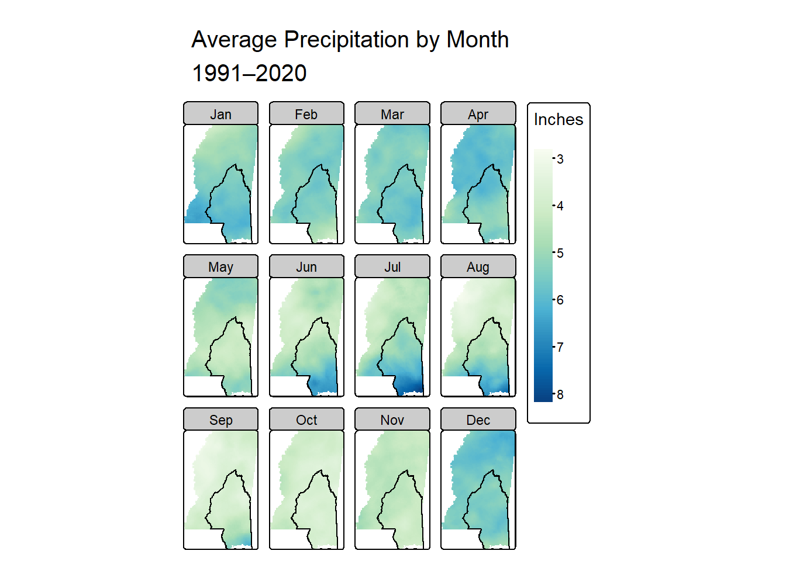
Recap
There are several great options for making nice maps in R! It can get overwhelming, but ultimately the differences are just in how easy it is for you to tweak details in the way that you need.
I definitely learned some things about rainfall in Mississippi too. I already knew we get more rain on an annual basis than the northern parts in the state, and I had read that the seasonal patterns were different. But by making these gazillion maps I actually saw what those differences are. The coast gets the most rain in summer - June through August - and the rest of the state seems to be rainiest from about December through April.
This was a very long post; if you made it this far, thanks for reading! I hope this exploration helps somebody else in their learning journey.